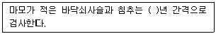

항로표지기능사 (2009-07-12 기출문제)
1과목: 항로표지 전원관리
1. 제어모듈내의 설정전압 비교에 의하여 점등되며 충전전압이 증가하여 만충전 상태에 도달하면 점등 되는 램프는?
- 만충전 램프
- 과방전 램프
- 역류방지 경보램프
- 수동제어경보램프
(정답률: 100%)

2. 다음 중 전류의 작용이 아닌 것은?
- 발열작용
- 화학작용
- 자기작용
- 압축작용
(정답률: 83%)
3. 다음 중 발전기 운전 중에 점검 사항과 거리가 먼 것은?
- 오일게이지 확인
- 강제 급유시의 유량
- 베어링의 온도 상승
- 냉각수의 확인
(정답률: 75%)
4. 다음 중 태양전지 Cell을 직렬로 연결하여 목적에 따라 필요한 전력을 얻을 수 있도록 만든 것은?
- 태양전지 모듈(Module)
- 어레이(Array)
- 솔라셀(Solar Cell)
- 패널(Panel)
(정답률: 85%)
5. 다음 중 발전기의 원리에 해당되는 것은?
- 쿨롱의 법칙
- 패러데이 법칙
- 플레밍의 오른손 법칙
- 플레밍의 왼손 법칙
(정답률: 86%)
6. 다음 중 축전지 극판의 단락원인과 가장 거리가 먼 것은?
- 격리판이 파손되거나 열화되어 양·직접 접촉되었을 때
- 충전전류가 클 때
- 양·사이에 금속편이 들어갔을 때
- 격리판이 바르게 삽입되지 않았을 때
(정답률: 79%)
7. 다음 중 태양광 발전시스템에서 태양전지 어레이의 출력전압이 낮을 때 축전지에서 태양전지 어레이로 흐르는 전류를 방지시켜 주는 것은?
- 정류기
- 전압조정장치
- 역전류방지 다이오드
- 일광변
(정답률: 86%)
8. 건전지의 단자전압을 표시하는 식으로 옳은 것은? (단, V : 단자전압, I : 전류, r : 내부저항, E : 기전력)
- V = E + ir
- V = E ( I - r )
- V = E - ir
- V = E – r
(정답률: 85%)
9. 어떤 도선에 2[A]의 전류를 1분 동안 흐르게 하였을 때 이 도선에 흐르는 전하량은?
- 20[C]
- 30[C]
- 60[C]
- 120[C]
(정답률: 100%)
10. 다음 중 자여자 발전기에 속하지 않는 것은?
- 분권발전기
- 직권발전기
- 자석발전기
- 복권발전기
(정답률: 81%)
11. 축전지 내부의 전해액이 부족할 때 가장 적합한 것은?
- 소금물을 채운다.
- 증류수를 채운다.
- 초충전 한다.
- 부동충전 한다.
(정답률: 89%)
12. 다음 중 무인항로표지용 전원장치와 가장 거리가 먼 것은?
- 축전지
- 태양전지
- 조력발전
- 파력발전
(정답률: 63%)
13. 다음 중 축전지의 기판 부식 및 절손의 원인과 관련 없는 것은?
- 과충전
- 전해액에 염산, 해수 등의 불순물이 혼입되었을 때
- 수명 말기
- 과방전
(정답률: 66%)
14. 다음 중 축전지의 연결법에서 가장 높은 전압을 얻기 위한 것은?
- 직렬법
- 병렬법
- 직·병렬법
- 혼합 연결법
(정답률: 89%)
15. 다음 중 납축전지의 주요 구성요소가 아닌 것은?
- 양극판
- 음극판
- 격리판
- 자석판
(정답률: 78%)
16. 황상 취급시 주의사항으로 옳지 않은 것은?
- 진한 황산에 정수제를 부여 혼합한다.
- 정수제에 진한 황산을 소량씩 가하면서 천천히 저어 준다.
- 피부나 내산성이 아닌 의복에 접촉하지 않도록 한다.
- 황상을 희석할 때 내산 및 내열성 용기를 사용한다.
(정답률: 96%)
17. 발전기의 구성요서에서 계자의 주 역할은?
- 기전력을 흡수시킨다.
- 기자력을 발생시킨다.
- 회전되는 부분으로 기전력을 유도한다.
- 마찰을 이용해서 기전력을 유도한다.
(정답률: 80%)
18. 다음 중 도체와 절연물의 중간 성질인 반도체에 해당되는 것은?
- 게르마늄
- 은
- 알루미늄
- 운모
(정답률: 83%)
19. 태양전지에 태양광이 입사하여 기전력이 발생하는 효과는?
- 전기변환 효과
- 광기전력 효과
- 반도체소자 효과
- 전자대전 효과
(정답률: 97%)
20. 정전이 되면 내장되어 있는 축전지를 통해 전원을 공급하여 주는 것은?
- 무정전전원장치(UPS)
- 차단기(Circuit Breaker)
- 콘덴서(Condenser)
- 정류기(Converter)
(정답률: 86%)
2과목: 고정 및 부표항로표지
21. 다음 중 가스식 등부표에 사용되는 가스로 적합하지 않은 것은?
- 아세틸렌 가스
- 프로판 가스
- 부탄가스
- 이산화탄소 가스
(정답률: 87%)
22. 표체가 무게중심을 중심축으로 1주기 동요하는데 걸리는 시간을 무엇이라 하는가?
- 부표의 진동주기
- 부표의 중심
- 부표의 경심
- 부표의 경사
(정답률: 86%)
23. 조류가 등명기에 앉아 배설물로 등명기를 오염시키는 것을 방지하기 위하여 등명기의 상부 등체에 설치한 것을 무엇이라 하는가?
- 전구 교환기
- 조류 방지봉
- 지지금구
- 섬광기
(정답률: 97%)
24. 다음 중 관리자가 유인등대의 전원 및 전기시설을 관리하는 기준으로 적합하지 않은 것은?
- 전원 공급 장비는 필요한 규격(용량)으로 하여 고장 시 긴급 대체할 수 있도록 예비품을 확보한다.
- 벌전실(동력실)은 출입을 제한하기 위하여 가능한한 밀폐하여야 한다.
- 발전실(동력실)에는 발화성 물질을 근접시키지 않아야 한다.
- 부하 전류는 전원장비 및 배선설비에 적합한 용량을 사용하여야 한다.
(정답률: 98%)
25. 다음 중 레이더 비콘의 주요 구성 부분이 아닌 것은?
- 송신기
- 수신기
- 비화기
- 송수신기용 안테나
(정답률: 95%)
26. 다음 중 랜비를 구성하는 주요 부속장비가 아닌 것은?
- 발전기
- 조류신호처리기
- 레이콘
- 무신호기
(정답률: 80%)
27. 다음 중 파랑의 요소에 대한 설명으로 적합하지 않은 것은?
- 파랑의 산부터 산까지, 곡에서 곡까지의 수평거리를 파장이라 한다.
- 파랑의 곡에서 산까지의 수직거리를 파고라 한다.
- 한 지점을 파랑의 산 또는 곡이 통과한 후부터 다음 산 또는 곡이 통과할 때까지의 시간을 주기라 한다.
- 파랑이 진행하여 가는 방향을 파향이라 한다.
(정답률: 62%)
28. 다음 중 무인표지용(무인등대) 예비 표지용품 보유기준으로 적합하지 않은 것은?
- 렌즈 : 10%
- 등명기 : 10%
- 태양전지 : 10%
- 충전조절기 : 10%
(정답률: 81%)
29. 등명기의 색 필터가 만족하여야 할 조건으로 적합 하지 않은 것은?
- 광학적 특성이 우수한 유리 또는 플라스틱으로 제작하고, 유해한 기포, 흠, 변형 등의 결점이 없도록 혼다.
- 색 필터의 색상은 백색, 적색, 녹색, 황색을 이용할 수 있다.
- 적외선에 의하여 색필터가 변색되는 것을 방지하여야 한다.
- 색 필터의 하단부는 진동 및 충격으로부터 보호될 수 있도록 지지대에 고정할 수 있어야 한다.
(정답률: 72%)
30. 다음 중 광파표지의 종류에 속하는 것은?
- 입표
- 조사등
- 레이콘
- 무신호기
(정답률: 75%)
31. 다음 중 무인표지의 도장 기준에 대한 설명으로 맞는 것은?
- 선위측정을 위하여 설치한 육지초안표지, 연안등대의 등탑은 백색으로 한다.
- 우현 방파제등대는 백색 도장에 녹등을 설치한다.
- 좌현 방파제등대는 홍색 도장에 홍등을 설치한다.
- 부표류를 제외한 무인표지의 전면 재도장은 5년 주기로 한다.
(정답률: 91%)
32. 다음 중 등부표의 정비점검주기에 대한 기준으로 가장 적합한 것은?
- 1개월에 1회 이상
- 2개월에 1회 이상
- 3개월에 1회 이상
- 6개월에 1회 이상
(정답률: 87%)
33. 다음 중 등대의 시인성이 좋다는 의미로 가장 적합한 것은?
- 먼거리에서 색으로 인식하기 쉬운 성질
- 먼거리에서 바르게 찾아내기 쉬운 성질
- 주위의 주의를 끌기 쉬운 성질
- 근거리에서 위치 확인이 쉬운 성질
(정답률: 75%)
34. 다음 ( ) 안에 들어갈 내용으로 가장 적합한 것은?

- 1 - 2
- 2 - 3
- 3 - 4
- 4 - 5
(정답률: 83%)
35. 다음 중 전구교환기가 갖추어야 할 조건으로 적합 하지 않은 것은?
- 각 부품은 호환성이 있도록 규격화한다.
- 회로를 쉽게 구분할 수 있도록 각 단자와 전선의 말단부분에 전원의 극성표시와 회로 식별 표시를 한다.
- 금속부품은 광학적 특성이 우수한 재질을 사용한다.
- 등명기의 초점위치에서 정확하게 전구를 고정할 수 있어야 한다.
(정답률: 85%)
36. 레이더 비콘의 최대 유효거리를 결정하는 요인이 아닌 것은?
- 비콘의 과부하
- 안테나 이득을 포함하는 비콘의 강도
- 비콘 안테나의 수면상 높이
- 선박 아테나의 수면상 높이
(정답률: 90%)
37. 다음 중 목측으로 관측하는 요소에 속하지 않는 것은?
- 시정
- 운량
- 기압
- 풍향
(정답률: 68%)
38. 등대기상관측은 1일 몇 회를 관측하여 통보해야 하는가?
- 1 회
- 3 회
- 5 회
- 7 회
(정답률: 83%)
39. 다음 중 항로상 좌·한계선을 따라 설치하여야 하는 부표간의 평균 거리로 적합하지 않은 것은?
- 내해 : 0.5 마일 정도
- 시계불량 지역 : 1마일 정도
- 외해 : 3마일 이내
- 준외해 : 1마일 내외
(정답률: 59%)
40. 레이콘(Racon) X – bacd 의 주파수대는?
- 2900 ~ 3100[MHz]
- 4500 ~ 5500[MHz]
- 6000 ~ 7000[MHz]
- 9300 ~ 9500[MHz]
(정답률: 88%)
3과목: 항로표지시스템의 운영
41. 다음 중 쌍곡선 항법이 아닌 것은?
- 로란
- 오메가
- 데카
- GPS
(정답률: 87%)
42. 다음 중 해상용 DGPS국의 구성요서가 아닌 것은?
- 기준국
- 통제센터
- 감시국
- 수신국
(정답률: 65%)
43. GPS의 오차를 최소화하기 위하여 육상에 오차 보정용 국을 따로 설치하여 운영하는 것은?
- DGPS
- RDF
- EPBS
- SDS
(정답률: 97%)
44. 다음 중 선박통항신호소의 목적에 해당되지 않는 것은?
- 항행상의 안전
- 선박교통의 효율 증진
- 환경보호
- 레이더의 기능 향상
(정답률: 67%)
45. 다음 중 항로표지 원격제어 시스템의 제어 체계에서 부표의 위치감시가 필요할 경우 가장 효과적인 수단은?
- GPS
- Loran
- 데카
- 오메가
(정답률: 91%)
46. 로란-C에서 주국(master station)으로 표시하는 기호는?
- W
- X
- Y
- M
(정답률: 73%)
47. 다음 중 국내 DGPS 보정치를 방송하는 반송파의 변조 방식으로 옳은 것은?
- MSK 변조
- PSK 변조
- ASK 변조
- FSK 변조
(정답률: 76%)
48. DGPS 방송에서 포맷번호와 메시지의 내용이 상호 옳은 것은?
- 5 : 의사거리 보정치
- 7 : 비콘력
- 9 : 퀘도상 위성상태
- 16 : 기준국 파라메터
(정답률: 84%)
49. 다음 중 GPS가 채용하고 있는 좌표계는?
- Tokyo Datum
- ITRF
- WGS84
- PZ 90
(정답률: 98%)
50. 로란-C 시스템의 GRI(Group Repetition Interval)에 대한 설명으로 적합한 것은?
- 수신기가 로란 펄스를 추적하는 지점을 뜻한다.
- 로란 펄스의 위상 반전을 뜻한다.
- 종국 펄스그룹의 송신 주파수를 뜻한다.
- 주국 또는 종국이 일정한 주기로 반복해서 발사하는 펄스군 사이의 간격을 뜻한다.
(정답률: 75%)
51. 다음 중 도플러 소나 방식에 의한 유속계인 것은?
- 전자유속계
- ADCP
- GEK
- 전자로그
(정답률: 77%)
52. 조류 신호소의 전광표지판을 이용하는 조류정보 제공방식이 아닌 것은?
- 투과식
- 반사식
- 굴절식
- 직사식
(정답률: 84%)
53. GPS에서 측위 서비스의 정밀도를 저하시키기 위하여 인위적으로 위성시계에 오차를 삽입하는 것은?
- PPS
- SA
- C/A Code
- SPS
(정답률: 85%)
54. 다음 중 로란-C 방식에 대한 설명으로 옳은 것은?
- 1개의 주국과 1개의 종국이 하나의 체인을 형성한다.
- 1개의 주국과 2~4개의 종국이 하나의 체인을 형성한다.
- 2개의 주국과 2개의 종국이 하나의 체인을 형성한다.
- 2개의 주국과 4개의 종국이 한 개의 체인을 형성한다.
(정답률: 79%)
55. 우리나라에서 최조로 선박통항신호소가 설치된 곳은?
- 인천항
- 부산항
- 울산항
- 포항항
(정답률: 86%)
56. 로란-C 항법에서 사용하는 반송파의 주파수는?
- 10[kHz]
- 100[kHz]
- 1000[kHz]
- 2000[kHz]
(정답률: 84%)
57. 다음 중 전파의 성질이 아닌 것은?
- 균일한 매질 내에서 일정한 속도로 직진한다.
- 진행 중에 주파수가 변한다.
- 도체에 부딪치면 반사한다.
- 다른 매질을 투과한 전파는 굴절한다.
(정답률: 93%)
58. 다음 중 무인으로 운용되는 장비에 대하여 원격감시를 하며 선박의 운항상태 등을 확인하고 관제하는 것은?
- VTS
- AIS
- DGPS
- RDF
(정답률: 85%)
59. 다음 중 DGPS의 주파수 및 신호형태에 해당되는 것은?
- 90~110[kHz] / 펄스파
- 90~110[MHz] / 펄스파
- 283~325[kHz] / 지속파
- 283~325[MHz] / 지속파
(정답률: 77%)
60. 다음 중 조류신호소를 구성하기 위한 데이터전송 시스템의 구성요소가 아닌 것은?
- 조류센서 구동기
- 조류신호 처리기
- 전광판 제어기
- 조류신호 조정기
(정답률: 46%)